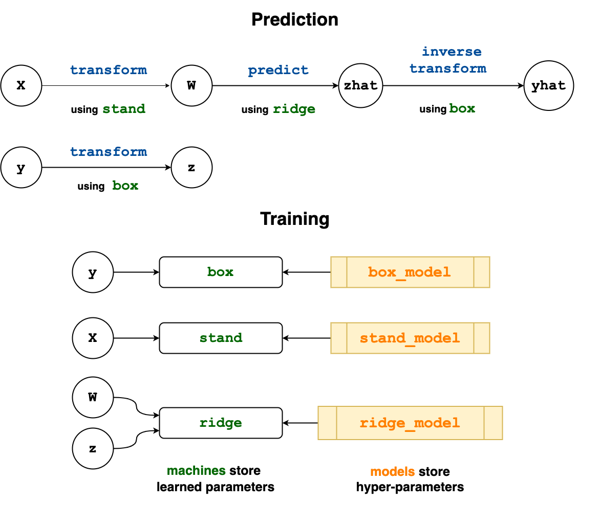

Composing Models
MLJ provides three common ways of combining multiple models together out of the box:
- Linear Pipelines - for unbranching chains that take the output of one model (e.g., dimension reduction, such as
PCA) and make it the input of the next model in the chain (e.g., a classification model, such asEvoTreeClassifier) - Homogeneous Ensembles - for blending the predictions of multiple supervised models all of the same type, but which receive different views of the training data to reduce overall variance. The technique is known as observation bagging. Bagging decision trees, like a
DecisionTreeClassifier, gives what is known as a random forest, although MLJ also provides several canned random forest models. - Model Stacking - for combining the predictions of a smaller number of models of possibly different type, with the help of an adjudicating model.
We note that composite models share all of the functionality of ordinary models. Their main novelty is that they include other models as hyper-parameters.
Finally, MLJ provides a powerful way to combine machine models in flexible learning networks. By wrapping training data in source nodes before calling functions like machine, predict and transform, a complicated user workflow which already combines multiple models is transformed into a blueprint for a new stand-alone composite model type. For example, MLJ's Stack model is implemented using a learning network. The remainder of this page is devoted to explaining this advanced feature.
Learning Networks
Below is a practical guide to the MLJ implementantion of learning networks, which have been described more abstractly in the article:
Hand-crafting a learning network, as outlined below, is a relatively advanced MLJ feature, assuming familiarity with the basics outlined in Getting Started. The syntax for building a learning network is essentially an extension of the basic syntax but with data containers replaced with nodes of a graph.
It is important to distinguish between learning networks and the comosite MLJ model types they are used to define.
A learning network is a directed acyclic graph whose nodes are objects that can be called to obtained data, either for training a machine, or for using as input to an operation. An operation is either:
static, that is, an ordinary function, such as such as
+,logorvcat, ordynamic, that is, an operation such as
predictortransformwhich is dispatched on both data and a training outcome attached to some machine.
Since the result of calling a node depends on the outcome of training events (and may involve lazy evaluation) one may think of a node as "dynamic" data, as opposed to the "static" data appearing in an ordinary MLJ workflow.
Different operations can dispatch on the same machine (i.e., can access a common set of learned parameters) and different machines can point to the same model (allowing for hyperparameter coupling).
By contrast, an exported learning network is a learning network exported as a stand-alone, re-usable Model object, to which all the MLJ Model meta-algorithms can be applied (ensembling, systematic tuning, etc).
By specifying data at the source nodes of a learning network, one can use and test the learning network as it is defined, which is also a good way to understand how learning networks work under the hood. This data, if specified, is ignored in the export process, for the exported composite model, like any other model, is not associated with any data until wrapped in a machine.
In MLJ learning networks treat the flow of information during training and prediction/transforming separately.
Building a simple learning network
The diagram below depicts a learning network which standardizes the input data X, learns an optimal Box-Cox transformation for the target y, predicts new target values using ridge regression, and then inverse-transforms those predictions to restore them to the original scale. Here we have only dynamic operations, labelled blue; the machines are in green. Notice that two operations both use stand, which stores the learned standardization scale parameters. The lower "Training" panel indicates which nodes are used to train each machine, and what model each machine is associated with.

Looking ahead, we note that the new composite model type we will create later will be assigned a single hyperparameter regressor, and the learning network model RidgeRegressor(lambda=0.1) will become this parameter's default value. Since model hyperparameters are mutable, this regressor can be changed to a different one (e.g., HuberRegressor()).
For testing purposes, we'll use a small synthetic data set:
using Statistics
import DataFrames
x1 = rand(300)
x2 = rand(300)
x3 = rand(300)
y = exp.(x1 - x2 -2x3 + 0.1*rand(300))
X = DataFrames.DataFrame(x1=x1, x2=x2, x3=x3)([1, 2, 3, 4, 5, 6, 7, 8, 9, 10 … 231, 232, 233, 234, 235, 236, 237, 238, 239, 240], [241, 242, 243, 244, 245, 246, 247, 248, 249, 250 … 291, 292, 293, 294, 295, 296, 297, 298, 299, 300])
Step one is to wrap the data in source nodes:
Xs = source(X)
ys = source(y)Source @481 ⏎ `AbstractVector{Continuous}`Note. One can omit the specification of data at the source nodes (by writing instead Xs = source() and ys = source()) and still export the resulting network as a stand-alone model using the @from_network macro described later; see the example under Static operations on nodes. However, one will be unable to fit or call network nodes, as illustrated below.
The contents of a source node can be recovered by simply calling the node with no arguments:
ys()[1:2]2-element Vector{Float64}:
0.6134298491965098
0.25931574813111463We label the nodes that we will define according to their outputs in the diagram. Notice that the nodes z and yhat use the same machine, namely box, for different operations.
To construct the W node we first need to define the machine stand that it will use to transform inputs.
stand_model = Standardizer()
stand = machine(stand_model, Xs)Machine{Standardizer,…} @932 trained 0 times; caches data
args:
1: Source @092 ⏎ `Table{AbstractVector{Continuous}}`
Because Xs is a node, instead of concrete data, we can call transform on the machine without first training it, and the result is the new node W, instead of concrete transformed data:
W = transform(stand, Xs)Node{Machine{Standardizer,…}} @114
args:
1: Source @092
formula:
transform(
Machine{Standardizer,…} @932,
Source @092)To get actual transformed data we call the node appropriately, which will require we first train the node. Training a node, rather than a machine, triggers training of all necessary machines in the network.
fit!(W, rows=train)
W() # transform all data
W(rows=test ) # transform only test data
W(X[3:4,:]) # transform any data, new or old2 rows × 3 columns
| x1 | x2 | x3 | |
|---|---|---|---|
| Float64 | Float64 | Float64 | |
| 1 | 1.27747 | -0.403588 | -0.41871 |
| 2 | -0.277547 | 0.21343 | 0.0684111 |
If you like, you can think of W (and the other nodes we will define) as "dynamic data": W is data, in the sense that it an be called ("indexed") on rows, but dynamic, in the sense the result depends on the outcome of training events.
The other nodes of our network are defined similarly:
RidgeRegressor = @load RidgeRegressor pkg=MultivariateStats
box_model = UnivariateBoxCoxTransformer() # for making data look normally-distributed
box = machine(box_model, ys)
z = transform(box, ys)
ridge_model = RidgeRegressor(lambda=0.1)
ridge =machine(ridge_model, W, z)
zhat = predict(ridge, W)
yhat = inverse_transform(box, zhat);Node{Machine{UnivariateBoxCoxTransformer,…}} @560
args:
1: Node{Machine{RidgeRegressor,…}} @350
formula:
inverse_transform(
Machine{UnivariateBoxCoxTransformer,…} @909,
predict(
Machine{RidgeRegressor,…} @313,
transform(
Machine{Standardizer,…} @932,
Source @092)))We are ready to train and evaluate the completed network. Notice that the standardizer, stand, is not retrained, as MLJ remembers that it was trained earlier:
fit!(yhat, rows=train);
rms(y[test], yhat(rows=test)) # evaluate0.0255714746808197
We can change a hyperparameters and retrain:
ridge_model.lambda = 0.01
fit!(yhat, rows=train);Node{Machine{UnivariateBoxCoxTransformer,…}} @560
args:
1: Node{Machine{RidgeRegressor,…}} @350
formula:
inverse_transform(
Machine{UnivariateBoxCoxTransformer,…} @909,
predict(
Machine{RidgeRegressor,…} @313,
transform(
Machine{Standardizer,…} @932,
Source @092)))And re-evaluate:
rms(y[test], yhat(rows=test))0.025695588991836046
Notable feature. The machine,
ridge::Machine{RidgeRegressor}, is retrained, because its underlying model has been mutated. However, since the outcome of this training has no effect on the training inputs of the machinesstandandbox, these transformers are left untouched. (During construction, each node and machine in a learning network determines and records all machines on which it depends.) This behavior, which extends to exported learning networks, means we can tune our wrapped regressor (using a holdout set) without re-computing transformations each time the hyperparameter is changed.
Learning network machines
As we show next, a learning network needs to be exported to create a new stand-alone model type. Instances of that type can be bound with data in a machine, which can then be evaluated, for example. Somewhat paradoxically, one can wrap a learning network in a certain kind of machine, called a learning network machine, before exporting it, and in fact, the export process actually requires us to do so. Since a composite model type does not yet exist, one constructs the machine using a "surrogate" model, whose name indicates the ultimate model supertype (Deterministic, Probabilistic, Unsupervised or Static). This surrogate model has no fields.
Continuing with the example above:
surrogate = Deterministic()
mach = machine(surrogate, Xs, ys; predict=yhat);Machine{DeterministicSurrogate,…} @010 trained 0 times; does not cache data
args:
1: Source @092 ⏎ `Table{AbstractVector{Continuous}}`
2: Source @481 ⏎ `AbstractVector{Continuous}`
Notice that a key-word argument declares which node is for making predictions, and the arguments Xs and ys declare which source nodes receive the input and target data. With mach constructed in this way, the code
fit!(mach)
predict(mach, X[test,:]);[ Info: Training Machine{UnivariateBoxCoxTransformer,…} @909.
[ Info: Training Machine{Standardizer,…} @932.
[ Info: Training Machine{RidgeRegressor,…} @313.is equivalent to
fit!(yhat)
yhat(X[test,:]);[ Info: Not retraining Machine{UnivariateBoxCoxTransformer,…} @909. Use `force=true` to force.
[ Info: Not retraining Machine{Standardizer,…} @932. Use `force=true` to force.
[ Info: Not retraining Machine{RidgeRegressor,…} @313. Use `force=true` to force.While it's main purpose is for export (see below), this machine can actually be evaluated:
evaluate!(mach, resampling=CV(nfolds=3), measure=LPLoss(p=2))PerformanceEvaluation object with these fields:
measure, measurement, operation, per_fold,
per_observation, fitted_params_per_fold,
report_per_fold, train_test_pairs
Extract:
┌────────────────────┬─────────────┬───────────┬────────────────────────────────
│ measure │ measurement │ operation │ per_fold ⋯
├────────────────────┼─────────────┼───────────┼────────────────────────────────
│ LPLoss(p = 2) @394 │ 0.0005 │ predict │ [0.000379, 0.000307, 0.000814 ⋯
└────────────────────┴─────────────┴───────────┴────────────────────────────────
1 column omitted
For more on constructing learning network machines, see machine.
Exporting a learning network as a stand-alone model
Having satisfied that our learning network works on the synthetic data, we are ready to export it as a stand-alone model.
Method I: The @from_network macro
Having defined a learning network machine, mach, as above, the following code defines a new model subtype WrappedRegressor <: Supervised with a single field regressor:
@from_network mach begin
mutable struct WrappedRegressor
regressor=ridge_model
end
endNote the declaration of the default value ridge_model, which must refer to an actual model appearing in the learning network. It can be typed, as in the alternative declaration below, which also declares some traits for the type (as shown by info(WrappedRegressor); see also Trait declarations).
@from_network mach begin
mutable struct WrappedRegressor
regressor::Deterministic=ridge_model
end
input_scitype = Table(Continuous,Finite)
target_scitype = AbstractVector{<:Continuous}
end
We can now create an instance of this type and apply the meta-algorithms that apply to any MLJ model:
julia> composite = WrappedRegressor()
WrappedRegressor(
regressor = RidgeRegressor(
lambda = 0.01))
X, y = @load_boston;
evaluate(composite, X, y, resampling=CV(), measure=l2, verbosity=0)Since our new type is mutable, we can swap the RidgeRegressor out for any other regressor:
KNNRegressor = @load KNNRegressor
composite.regressor = KNNRegressor(K=7)
julia> composite
WrappedRegressor(regressor = KNNRegressor(K = 7,
algorithm = :kdtree,
metric = Distances.Euclidean(0.0),
leafsize = 10,
reorder = true,
weights = :uniform,),) @ 2…63Method II: Finer control (advanced)
This section describes an advanced feature that can be skipped on a first reading.
In Method I above, only models appearing in the network will appear as hyperparameters of the exported composite model. There is a second more flexible method for exporting the network, which allows finer control over the exported Model struct, and which also avoids macros. The two steps required are:
Define a new
mutable structmodel type.Wrap the learning network code in a model
fitmethod.
Let's start with an elementary illustration in the learning network we just exported using Method I.
The mutable struct definition looks like this:
mutable struct WrappedRegressor2 <: DeterministicComposite
regressor
end
# keyword constructor
WrappedRegressor2(; regressor=RidgeRegressor()) = WrappedRegressor2(regressor)The other supertype options are ProbabilisticComposite, IntervalComposite, UnsupervisedComposite and StaticComposite.
We now simply cut and paste the code defining the learning network into a model fit method (as opposed to a machine fit! method):
function MLJ.fit(model::WrappedRegressor2, verbosity::Integer, X, y)
Xs = source(X)
ys = source(y)
stand_model = Standardizer()
stand = machine(stand_model, Xs)
W = transform(stand, Xs)
box_model = UnivariateBoxCoxTransformer()
box = machine(box_model, ys)
z = transform(box, ys)
ridge_model = model.regressor ###
ridge =machine(ridge_model, W, z)
zhat = predict(ridge, W)
yhat = inverse_transform(box, zhat)
mach = machine(Deterministic(), Xs, ys; predict=yhat)
return!(mach, model, verbosity)
endThis completes the export process.
Notes:
The line marked
###, where the new exported model's hyperparameterregressoris spliced into the network, is the only modification to the previous code.After defining the network there is the additional step of constructing and fitting a learning network machine (see above).
The last call in the function
return!(mach, model, verbosity)callsfit!on the learning network machinemachand splits it into various pieces, as required by the MLJ model interface. See also thereturn!doc-string.Important note An MLJ
fitmethod is not allowed to mutate itsmodelargument.
What's going on here? MLJ's machine interface is built atop a more primitive model interface, implemented for each algorithm. Each supervised model type (eg,
RidgeRegressor) requires modelfitandpredictmethods, which are called by the corresponding machinefit!andpredictmethods. We don't need to define a modelpredictmethod here because MLJ provides a fallback which simply calls thepredicton the learning network machine created in thefitmethod.
A composite model coupling component model hyper-parameters
We now give a more complicated example of a composite model which exposes some parameters used in the network that are not simply component models. The model combines a clustering model (e.g., KMeans()) for dimension reduction with ridge regression, but has the following "coupling" of the hyper parameters: The ridge regularization depends on the number of clusters used (with less regularization for a greater number of clusters) and a user-specified "coupling" coefficient K.
RidgeRegressor = @load RidgeRegressor pkg=MLJLinearModels
mutable struct MyComposite <: DeterministicComposite
clusterer # the clustering model (e.g., KMeans())
ridge_solver # a ridge regression parameter we want to expose
K::Float64 # a "coupling" coefficient
end
function MLJ.fit(composite::Composite, verbosity, X, y)
Xs = source(X)
ys = source(y)
clusterer = composite.clusterer
k = clusterer.k
clustererM = machine(clusterer, Xs)
Xsmall = transform(clustererM, Xs)
# the coupling: ridge regularization depends on number of
# clusters (and the specified coefficient `K`):
lambda = exp(-composite.K/clusterer.k)
ridge = RidgeRegressor(lambda=lambda, solver=composite.ridge_solver)
ridgeM = machine(ridge, Xsmall, ys)
yhat = predict(ridgeM, Xsmall)
mach = machine(Deterministic(), Xs, ys; predict=yhat)
return!(mach, composite, verbosity)
end
kmeans = (@load KMeans pkg=Clustering)()
my_composite = MyComposite(kmeans, nothing, 0.5)
````
@example 42 evaluate(my_composite, X, y, measure=MeanAbsoluteError(), verbosity=0)
## Static operations on nodes
Continuing to view nodes as "dynamic data", we can, in addition to
applying "dynamic" operations like `predict` and `transform` to nodes,
overload ordinary "static" (unlearned) operations as well. These
operations can be ordinary functions (with possibly multiple
arguments) or they could be functions *with parameters*, such as "take
a weighted average of two nodes", where the weights are
parameters. Here we address the simpler case of ordinary functions. For
the parametric case, see "Static transformers" in [Transformers and Other Unsupervised Models](@ref)
Let us first give a demonstration of operations that work
out-of-the-box. These include:
- addition and scalar multiplication
- `exp`, `log`, `vcat`, `hcat`
- tabularization (`MLJ.table`) and matrixification (`MLJ.matrix`)
As a demonstration of some of these, consider the learning network
below that: (i) One-hot encodes the input table `X`; (ii) Log
transforms the continuous target `y`; (iii) Fits specified K-nearest
neighbour and ridge regressor models to the data; (iv) Computes an
average of the individual model predictions; and (v) Inverse
transforms (exponentiates) the blended predictions.
Note, in particular, the lines defining `zhat` and `yhat`, which
combine several static node operations.
@example 42 RidgeRegressor = @load RidgeRegressor pkg=MultivariateStats KNNRegressor = @load KNNRegressor
Xs = source() ys = source()
hot = machine(OneHotEncoder(), Xs)
W, z, zhat and yhat are nodes in the network:
W = transform(hot, Xs) # one-hot encode the input z = log(ys) # transform the target
model1 = RidgeRegressor(lambda=0.1) model2 = KNNRegressor(K=7)
mach1 = machine(model1, W, z) mach2 = machine(model2, W, z)
average the predictions of the KNN and ridge models:
zhat = 0.5predict(mach1, W) + 0.5predict(mach2, W)
inverse the target transformation
yhat = exp(zhat)
Exporting this learning network as a stand-alone model:
julia @from_network machine(Deterministic(), Xs, ys; predict=yhat) begin mutable struct DoubleRegressor regressor1=model1 regressor2=model2 end end
To deal with operations on nodes not supported out-of-the box, one
can use the `@node` macro. Supposing, in the preceding example, we
wanted the geometric mean rather than arithmetic mean. Then, the
definition of `zhat` above can be replaced with
julia yhat1 = predict(mach1, W) yhat2 = predict(mach2, W) gmean(y1, y2) = sqrt.(y1.*y2) zhat = @node gmean(yhat1, yhat2)
There is also a `node` function, which would achieve the same in this way:
julia zhat = node((y1, y2)->sqrt.(y1.*y2), predict(mach1, W), predict(mach2, W))
### More `node` examples
Here are some examples taken from MLJ source
(at work in the example above) for overloading common operations for nodes:
julia Base.log(v::Vector{<:Number}) = log.(v) Base.log(X::AbstractNode) = node(log, X)
import Base.+ +(y1::AbstractNode, y2::AbstractNode) = node(+, y1, y2) +(y1, y2::AbstractNode) = node(+, y1, y2) +(y1::AbstractNode, y2) = node(+, y1, y2)
Here `AbstractNode` is the common super-type of `Node` and `Source`.
And a final example, using the `@node` macro to row-shuffle a table:
julia using Random X = (x1 = [1, 2, 3, 4, 5], x2 = [:one, :two, :three, :four, :five]) rows(X) = 1:nrows(X)
Xs = source(X) rs = @node rows(Xs) W = @node selectrows(Xs, @node shuffle(rs))
julia> W() (x1 = [5, 1, 3, 2, 4], x2 = Symbol[:five, :one, :three, :two, :four],)
## The learning network API
Two new julia types are part of learning networks: `Source` and `Node`.
Formally, a learning network defines *two* labeled directed acyclic
graphs (DAG's) whose nodes are `Node` or `Source` objects, and whose
labels are `Machine` objects. We obtain the first DAG from directed
edges of the form $N1 -> N2$ whenever $N1$ is an *argument* of $N2$
(see below). Only this DAG is relevant when calling a node, as
discussed in examples above and below. To form the second DAG
(relevant when calling or calling `fit!` on a node) one adds edges for
which $N1$ is *training argument* of the the machine which labels
$N1$. We call the second, larger DAG, the *completed learning network*
(but note only edges of the smaller network are explicitly drawn in
diagrams, for simplicity).
### Source nodes
Only source nodes reference concrete data. A `Source` object has a
single field, `data`.
@docs source(X) rebind! sources origins
### Nodes
The key components of a `Node` are:
- An *operation*, which will either be *static* (a fixed function) or
*dynamic* (such as `predict` or `transform`, dispatched on a machine).
- A *machine* on which to dispatch the operation (void if the
operation is static). The training arguments of the machine are
generally other nodes.
- Upstream connections to other nodes (including source nodes)
specified by *arguments* (one for each argument of the operation).
@docs node
@docs @node
@docs @from_network
@docs return! ```